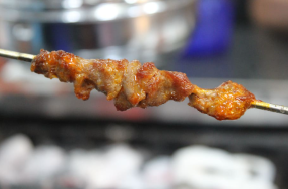

A superb, commonly known dish across China: dumplings. A soft, doughy exterior melds perfectly with a savory meat filling, creating this delicious staple. We recommend them fried; the crispy crunch works beautifully with the flavourful center, topped with some green onions and with a side of black vinegar. A great place to eat dumplings is Xian Lao Man.
A tourist favorite, Peking Duck is a piquant meat dish eaten commonly in rolls– or on its own. A thin layer of fatty skin is roasted to perfection, leaving a brittle shell that pairs well with the soft, juicy meat. Best served at Quanjede, this is an unforgettable delicacy we urge you to try.
Street food is a staple of China. Cheap, mouthwatering, and easy to eat on the stop, we’ve planned for several increments of your vacation to include a meal or two on the street. Meals amount to a few dollars and include a variety of foods such as chow mein, wontons, lamb skewers, fried rice, noodles, and sweet and sour pork.
Vendors all over Beijing can be found selling certain variations of each, with their own twists and spices. By incorporating China’s most expensive and cheapest food into a single trip, you get to experience both spectrums of this wonderful city.

With a variety of small, comfortable cafes, China has several brunch-styles branches made just for traveling tourists like you. Loaded with all kinds of snacks, tea, and light meals, it’s great for something to keep you energized– while simultaneously ensuring you make the most out of one of the expensive (paid for!) dinners we’re scheduling.
Mandarin Oriental and Aman Summer Palace both offer complimentary breakfast, with foods like tender sirloin, soft pastries, breakfast favorites (eggs, bacon, etc.), rolls, desserts, and traditional Chinese delicacies. Dine on the palace’s decorated pavilion, or in the full view of China’s massive cities in Mandarin Oriental.